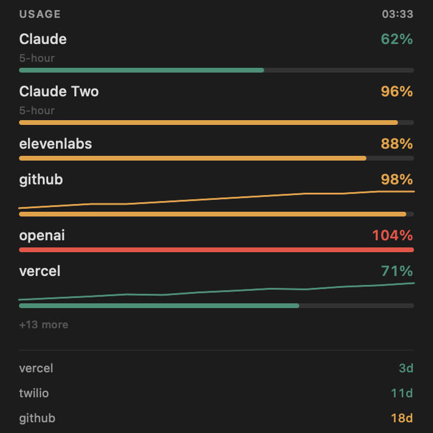
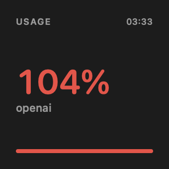
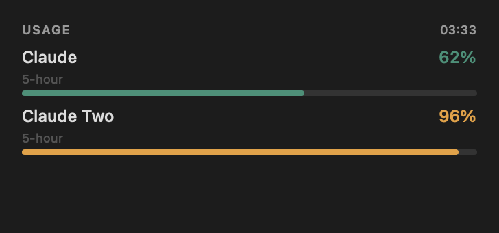
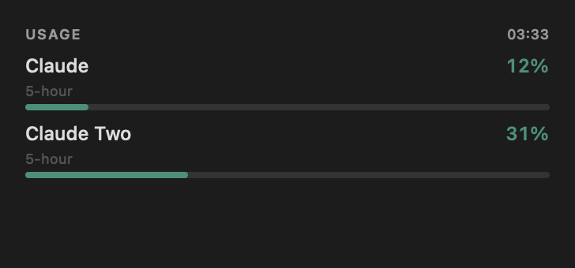

Situational awareness for every meter you're burning
Run multiple Claude Desktop accounts on one Mac — properly, with real app identities rather than a wrapper. Then see every account's limit, and the rest of your stack's, in the menu bar and in a widget on your desktop.
Apache-2.0 macOS 13+ Apple Silicon build from source — Homebrew is planned, not shipped
{kind=link}

tmu assets widget and regenerated in CI.
Open full size ↗
The problem
Data isolation was never the hard part. Identity is.
The obvious approach — and what existing tools do — is to launch the stock binary
with a different --user-data-dir. That separates the data but not the
identity, and macOS keys almost everything on identity.
| Symptom | Cause |
|---|---|
| Double-clicking Claude does nothing | Both processes exec from the same bundle, so LaunchServices thinks the app is already running and re-activates the other account's window |
| Sign-in lands in the wrong account | Claude calls setAsDefaultProtocolClient("claude") on every launch; last one wins |
| MCP OAuth callbacks vanish | The same tug-of-war, on claude://claude.ai/mcp-auth-callback/sdk |
The second app runs from AppTranslocation |
A quarantined bundle is relocated to a random read-only path by Gatekeeper, and registers itself twice |
How it works
A real app per account, and a broker that keeps the callbacks straight.
Claude Desktop is never bundled or redistributed. TrackMyUsage clones the copy
already on your machine, leaves app.asar byte-for-byte untouched, and
never handles your credentials.
A real bundle per instance
An APFS clonefile copy — sub-second, copy-on-write — with a
unique CFBundleIdentifier, re-signed inside-out, quarantine
cleared. LaunchServices now sees two different apps, because there are two.
An in-bundle launcher shim
The app hardcodes app.setName("Claude") and would otherwise
open the primary's profile, so each clone carries a small launcher that
injects its own --user-data-dir before Electron starts.
A deep-link broker
One tiny agent owns claude://, tracks which instance you were
last working in, and forwards each callback there — reclaiming the scheme
within about a second whenever an instance grabs it at launch.
The widget
Your limits, on the desktop, where macOS puts widgets.
Three sizes, placed wherever you want them. Every image below is produced by the same pure function that draws the real thing: snapshots in, a view model out — and the view model is committed to the repository and checked in CI.
{kind=link}

Small. The single reading nearest its limit, large enough to read from across a room. One question, answered — which is what a glance actually asks.
{kind=link}

Medium. The account ledger, with the window each percentage is measured over. Managing several accounts of one provider is what this project is for, so at this size those are what you get.
Large. Accounts and services together, with sparklines and what renews next. Where it runs out of room it says so — the six rows shown are the six nearest their limits, and the rest are counted rather than quietly dropped.
{kind=link}

Quiet. What it looks like almost all of the time. Attention is derived from the readings, never chosen: a setting would produce a permanently alert desktop, which is the same as no signal at all. Silence is information too.
The menu bar
Every account's limit, always visible.
A gauge in the menu bar, with a warning glyph when one is spent. The panel behind it shows each limit, time-to-exhaustion where a trend is measurable, and a switch button when another account has materially more headroom.
 62%
·
96%
62%
·
96%
Read, not estimated
Claude Desktop already records plan utilisation to
plan-usage-history.json in each profile, tagged by organisation.
TrackMyUsage reads the same numbers the app does, for every account at once —
where existing monitors estimate from Claude Code token logs.
Steering, not nagging
tmu steer names the account with headroom and stops there.
--yes performs the switch. Notifications fire once per threshold
per window and re-arm when the window rolls.
One model, every surface
The widget, the pill, the popover and the instances window all render the
same TelemetryModel. That shared choke point is the only
structural guarantee they agree about what a reading means.
Providers
Absent rather than stubbed.
A parser written from a remembered API shape is indistinguishable from a correct one
until it reports the wrong number. tmu provider probe captures a real
response so each adapter is written against fact — which is why this list is shorter
than it could be.
Loading…
This table is generated from ProviderRegistry and checked in CI, so the
counts here are structurally unable to overstate what actually ships.
Decisions, not accidents
The rules this thing enforces rather than documents.
Credentials never leave the keychain
Login keychain only, AfterFirstUnlockThisDeviceOnly, one account
per provider. Secrets are read from stdin and never from a flag — a flag lands
in shell history and in ps.
The HTTP client has exactly one method
get. That single-method protocol is the GET-only
enforcement; there is no other verb to call. An adapter that could POST is an
adapter that could be made to change something.
Account-scoped config never syncs
Permission grants, OAuth token caches and org-suffixed keys are refused and reported, not copied. Carrying a permission grant between accounts is a security bug, not a convenience.
Absence is stated, never drawn as zero
No data reads "no data". A stale number carries a ?. An
unmeasurable trend prints nothing rather than a flat line. A reading of 104%
renders as 104%, because clamping it would hide the thing worth seeing.
Rendering is a pure function
Snapshots in, SVG out; the daemon owns every byte of I/O. A layout regression
fails in swift test instead of appearing on somebody's desktop —
including the images on this page.
Removal requires a flag, always
apply never deletes without --prune on the command
line, even when the manifest says otherwise. Manifests get shared; a file
someone else wrote must not be able to delete your extensions.
Get started
Clone it, build it, make an instance.
Requires macOS 13+ on APFS, Claude Desktop at /Applications/Claude.app,
and the Xcode command line tools.
$ git clone https://github.com/frogbark/trackmyusage && cd trackmyusage # Build and install the deep-link broker (once) $ ./scripts/build-link.sh $ cp -Rp "build/TrackMyUsage Link.app" /Applications/ $ ./scripts/install-link-agent.sh # Create an instance, then sign into it with your second account $ ./scripts/create-instance.sh "Work" --launch # See every account and service at once $ swift build -c release $ .build/release/tmu usage # the widget shows the same numbers
You will see /Applications/Claudruple and it is not a typo. The project
was renamed, but that directory, each clone's bundle id and each clone's profile path
are baked into LaunchServices registrations, code signatures and a compiled-in
launcher path. Renaming them would not move anything — it would make working
instances unreachable, silently.
See what you're actually burning.
Free and open source under Apache-2.0. Nothing in the repository charges for anything, and the daemon never phones home with your usage.